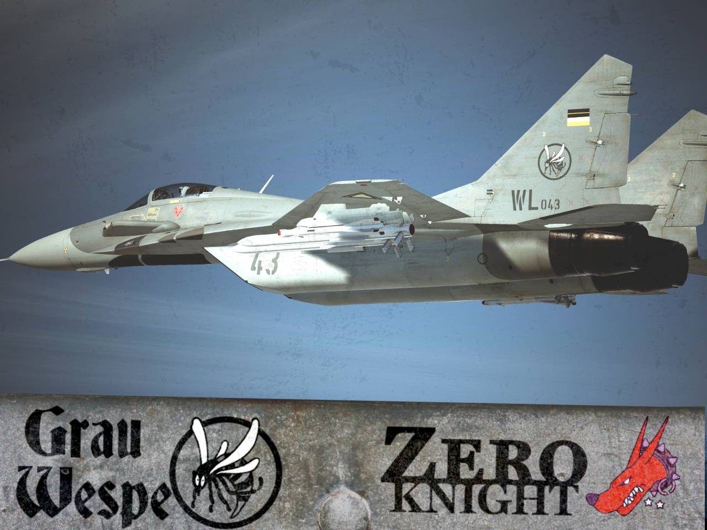
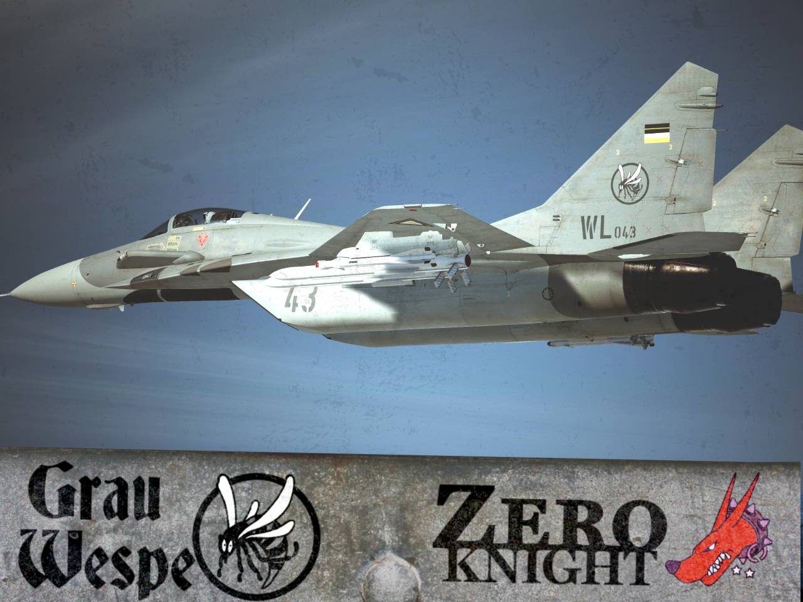
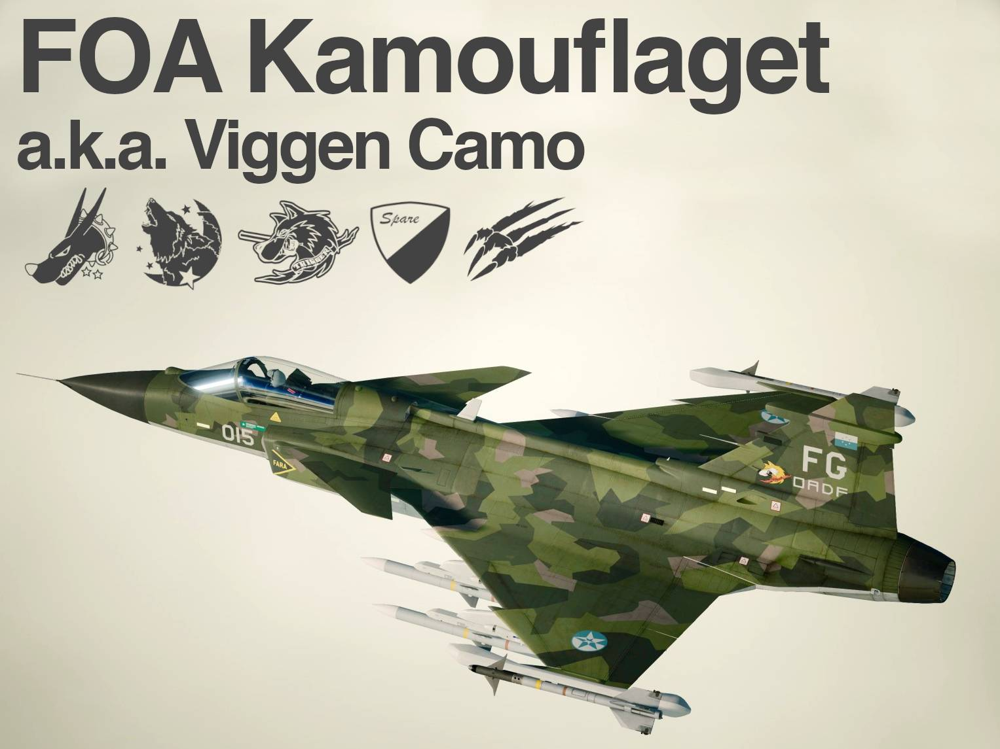
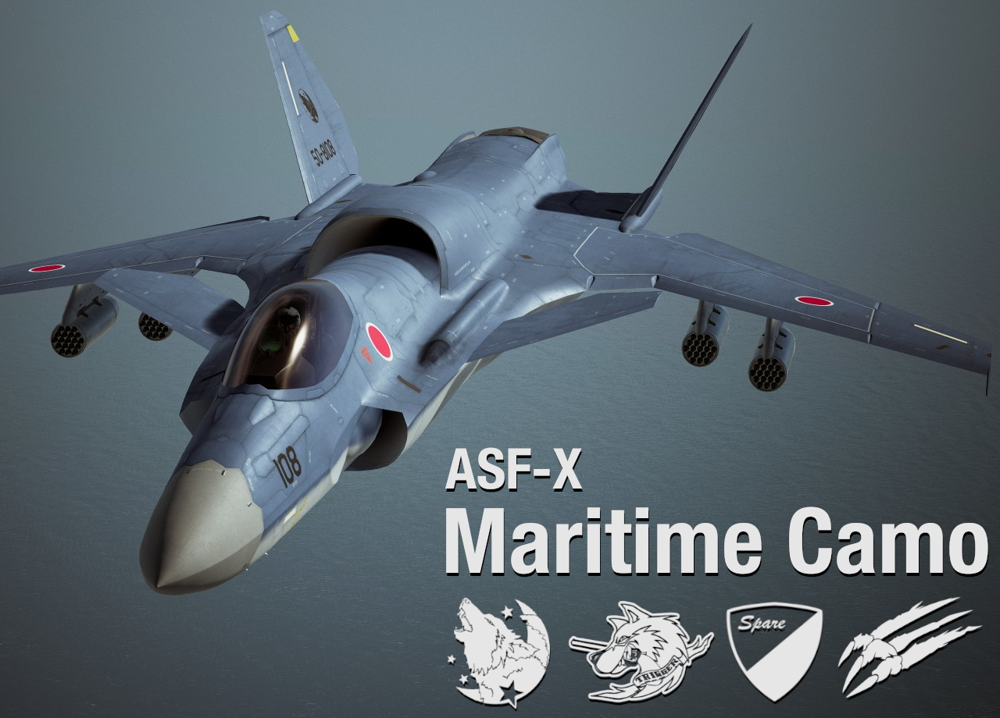
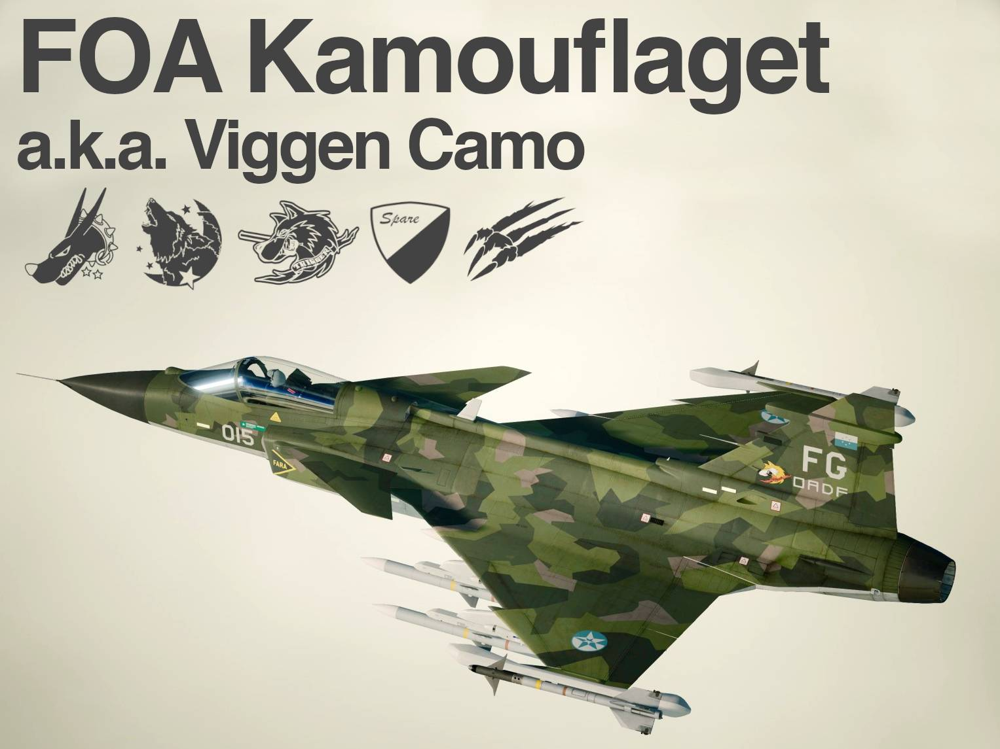
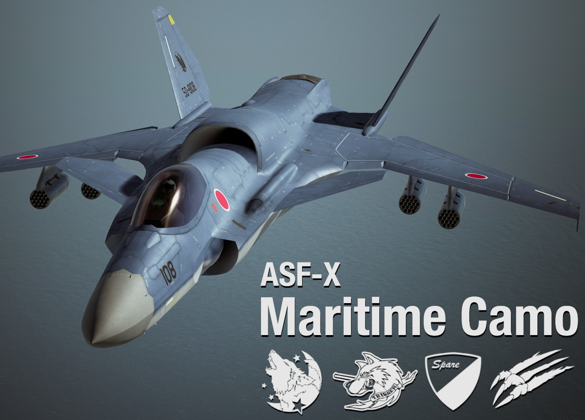

Contents
Ace Combat 7 Modding Guides

Texture Replacement Guide using UE4 Editor by Dantofu
This tutorial covers texture replacement using Unreal Engine 4. This process preserves the lowest mipmap level, allows you to use custom MREC in all skin slots, and enables the use of high quality BC7 texture compression. For best results, use this method.
Material Instance Usage Manual by Dantofu
This advanced manual covers how to create and modify material instance settings, assign unique texture filepaths per-skin, and customize emissive effects.Permanent Emissive Guide by Megalith
This guide covers adding glowing parts to aircraft skins that stay lit at all times, not just during refueling & landing sequences.
Texture Replacement Guide using Python Scripts
This basic texture replacement method uses a simple tool-set comprised of portable apps and python scripts. This is useful for rapidly iterating and testing your textures in-game, since the entire process can be scripted. If you have a basic understanding of windows batch scripts you can convert, pack, and install your WIP texture mod in one-click.
Blender Quick Start
This guide covers using Blender to preview & edit your textures on 3D models, as well as ripping models using Ninjaripper. Regardless of which guide you use for texture replacement, you'll want to get familiar with using Blender to assist you in texture editing and previewing your edits.
Character Portrait Replacement Guide by Calamitous
This guide covers replacing character portrats using UE4, includes links to a PSD template and the required font. Since the guide assumes the user is familar with UE4 baking; you should familairize yourself with the UE4 Texture Replacement Guide first. GIMP users should use this template rather than the provided PSD.
Resources
Codename Vanilla
Community made repository of blank, layered, diffuse texture templates for AC7 aircraft.
ACMI (AC7 Mod Installer Creator)
Semi-automated packing tool by acg93 that drastically reduces the number of steps involved in packing your cooked assets into a PAK file for distribution.
AC7 Mod Tool
Tool by lotsbiss that allows for opening PAK files, replacing the content within, and re-packaging.
Universal Unreal Engine 4 Unlocker
This tool allows you to freely move the camera around, change depth of field, freeze time, remove the HUD, and enable supersampling; all on-the-fly. Indespensible for taking screenshots.
ACES Typografics
A collection of high quality, painstakingly researched, Military & Ace Combat related fonts by Roach Typografics.
Useful Links
- Tailor Made Decals - An online store that specializes in high quality model decals. An excellent reference for small details on aircraft like maintenance, warning, and rescue placards.
- 1999.co.jp - This online hobby shop frequently includes scans of the instructions for the aircraft models they sell; these make excellent paint-guides for recreaing liveries.
- Large Scale Planes - Review site for large-scale model aircraft. Most reviews include high resolution scans of decals and instruction sheets.
- Scale News Very high quality aircraft walkaround galleries, featuring many close-up photos of hatches, service bays, maintenance placards, etc.
- Prime Portal - Scale modeller resource site, featuring many walkaround photos galleries of military aircraft.
- Net-Maquettes - A massive collection of walkaround galleries of aircraft from all over the world on static display, and in museums.
- Mariusz Wojciechowski's Fulcrum and Flanker pages. Comprehensive catalog of liveries worn by Fulcrums and Flankers, featuring full-color 3-view diagrams.
- MIL-STD-2161C - Department of Defense manual covering paint schemes & exterior markings for US Navy and Marine Corps aircraft. Ever wonder what all those yellow & red markings & symbols on western planes are? Wonder no more.
Ostrich's Skins
All of my texture mods can be found on ModDB; https://www.moddb.com/members/superostrich/addons
 



 


